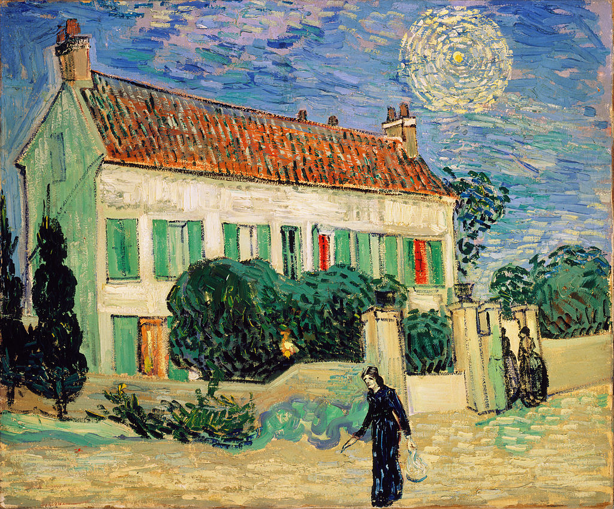

<head>
<meta charset="UTF-8" />
<meta name="keywords" content="drawing, painting" />
<meta name="description" content="drawings by Sunjy" />
<title>Sunjy</title>
<link rel="shortcut icon" type="image/x-icon" href="../../mImages/mCommon/favicon.ico" media="screen" />
<link rel="stylesheet" type="text/css" href="../../mCsses/mCommon/mCssA.css" />
<link rel="stylesheet" type="text/css" href="../../mCsses/mCommon/mCssB.css" />
<link rel="stylesheet" type="text/css" href="../../mCsses/mCommon/mCssC.css" />
<link rel="stylesheet" type="text/css" href="../../mCsses/mCommon/mCssD.css" />
<link rel="stylesheet" type="text/css" href="../../mCsses/mContent/mCssA.css" />
<link rel="stylesheet" type="text/css" href="../../mCsses/mContent/mCssB.css" />
<link rel="stylesheet" type="text/css" href="../../mCsses/mContent/mCssC.css" />
<link rel="stylesheet" type="text/css" href="../../mCsses/mContent/mCssD.css" />
</head>
<script type="text/javascript" src="../../mScripts/mContent/mContentAA.js" /></script>
<script type="text/javascript" src="../../mScripts/mContent/mContentAB.js" /></script>
<script type="text/javascript" src="../../mScripts/mContent/mContentAC.js" /></script>
<script type="text/javascript" src="../../mScripts/mContent/mContentAD.js" /></script>
<script type="text/javascript"></script> 
<script type="text/javascript">
document.write('<div class="mImgAbsolute"></div>');
/*
document.write('<p class="mFontSizeBColor" />From a white paper...</p>');
document.write('<table class="center"><tr><td>');
document.write('');
document.write('</td></tr></table>');
*/
</script>


<script type="text/javascript">
document.write('<p class="mFontSizeBColor" />White House at Night</p>');
document.write('<p class="mFontSizeSColor" />By Vincent van Gogh. “White House at Night” by Vincent van Gogh was created six weeks before his death. It is thought that van Gogh painted “White House at Night” around 8:00 PM based on the position of the “star” in the painting.<br><br>Astronomers calculated that the star in the picture must be Venus, which was bright in the evening sky in June 1890. Does this painting express Van Gogh’ s psychological tension?<br><br>The painting itself has had a turbulent history. In the late 1920s, it became part of a private collection of a German industrialist.<br><br>Pictures of this style were labeled “degenerate art” by the Nazis, which contributed to this painting and other Post-Impressionism paintings being kept secret.<br><br>Thought to have been lost after World War II, the painting was in the Hermitage archives for fifty years before being exhibited in 1995.<br><br>At the same Hermitage exhibition, three other Van Gogh’s paintings also thought to have been lost, were presented for the first time since the war.<br><br>They included: “Landscape with House and Ploughman,” “Morning: Going out to Work (After Millet)” and the “Portrait of Madame Trabuc” all by Vincent van Gogh.</p>');
document.write('<table class="center" /><tr><td>');
document.write('<br>Astronomers calculated that the star in the picture must be Venus, which was bright in the evening sky in June 1890. Does this painting express Van Gogh’ s psychological tension?<br><br>The painting itself has had a turbulent history. In the late 1920s, it became part of a private collection of a German industrialist.<br><br>Pictures of this style were labeled “degenerate art” by the Nazis, which contributed to this painting and other Post-Impressionism paintings being kept secret.<br><br>Thought to have been lost after World War II, the painting was in the Hermitage archives for fifty years before being exhibited in 1995.<br><br>At the same Hermitage exhibition, three other Van Gogh’s paintings also thought to have been lost, were presented for the first time since the war.<br><br>They included: “Landscape with House and Ploughman,” “Morning: Going out to Work (After Millet)” and the “Portrait of Madame Trabuc” all by Vincent van Gogh." />');
document.write('</td></tr></table>');
</script>


